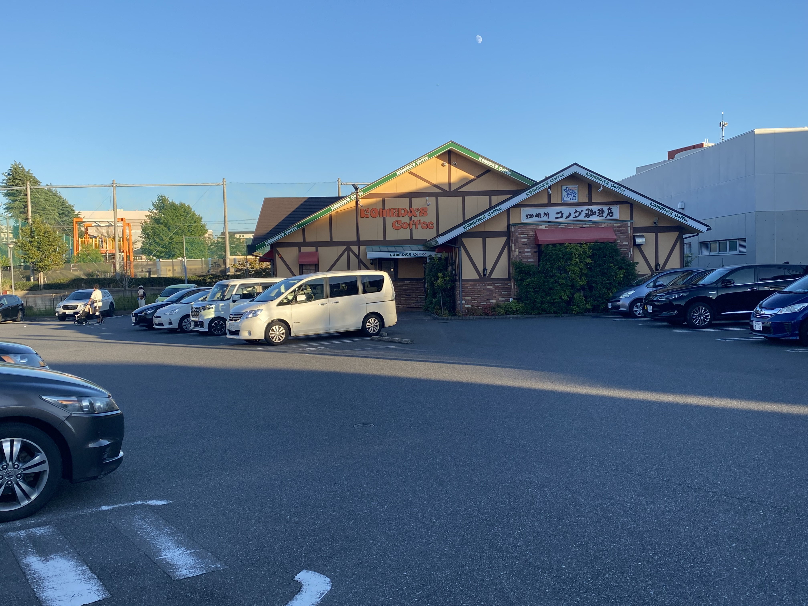
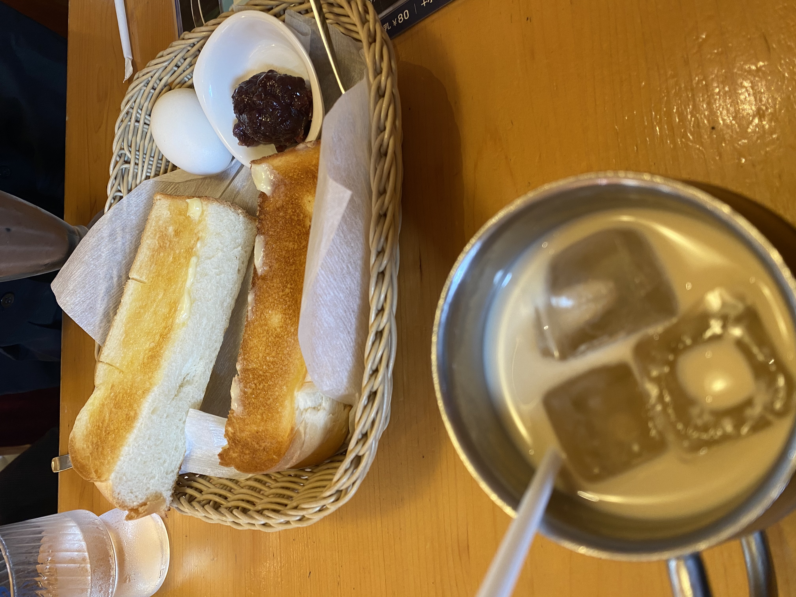
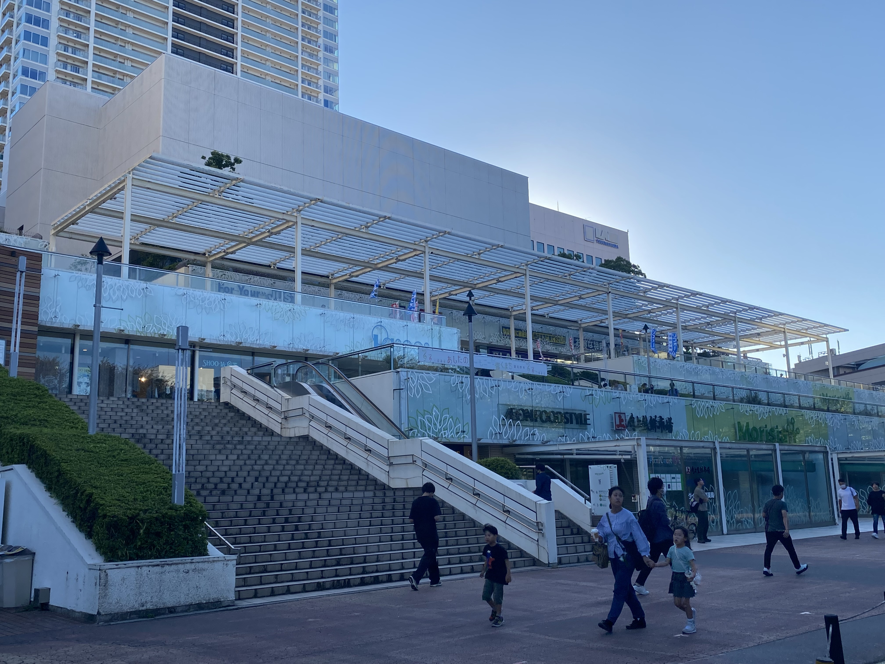
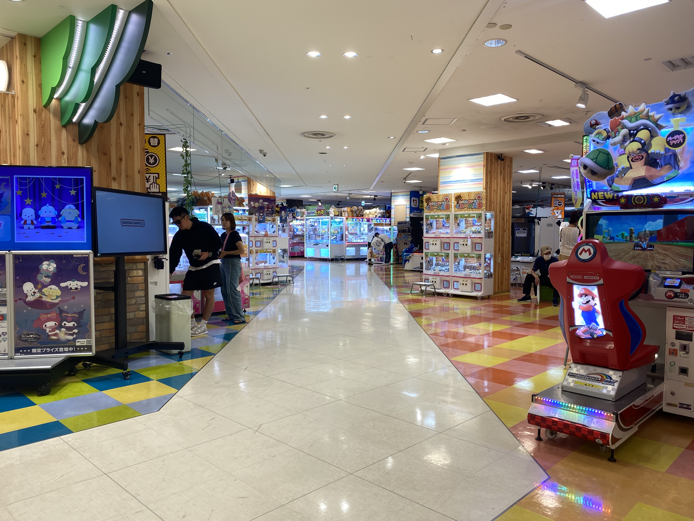
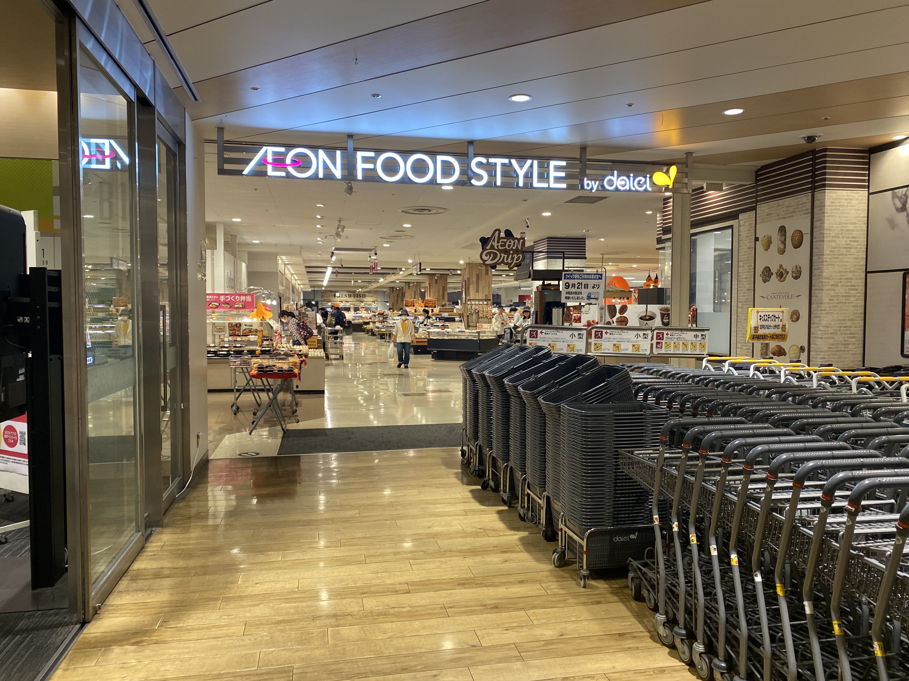
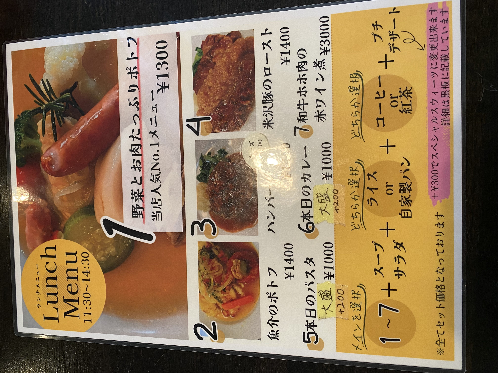
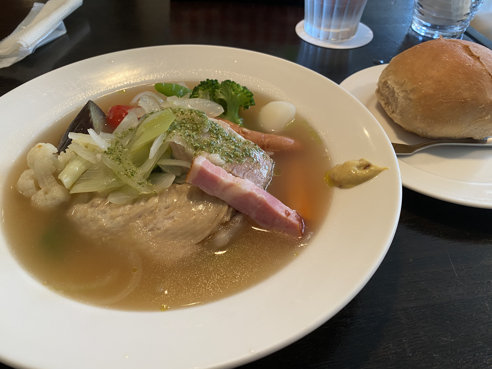
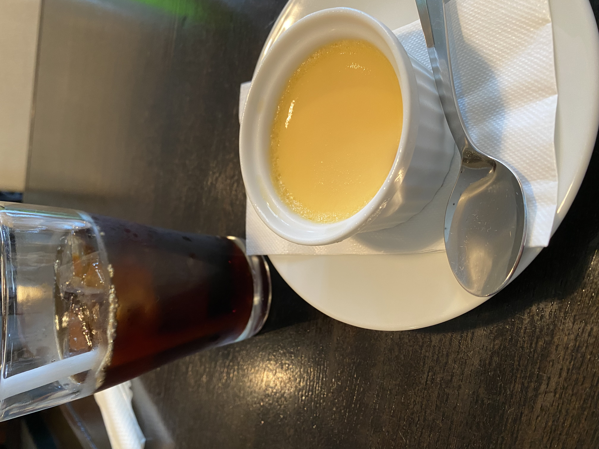

09:00


"逆写真詐欺"で有名なコメダ珈琲店。
近隣の方々の憩いの場になっています。
00:00


JR津田沼駅から徒歩3分の好立地にある商業施設"モリシア津田沼"。


1,2階はTSUTAYAやセリアなどの生活用品店、ファストフード店、カフェ、さらにはゲームセンターまであります。
さらに3階にはヤマダデンキ、地下1階にはイオンスタイルもあるので、モリシアだけで買い物や食事が完結してしまいます。
休日には縁日やミニライブも開催されるので、モリシアで1日満喫できちゃうかもしれません!
00:00


閑静な住宅街にあるポトフ屋さん"ビストロポトフ"。
落ち着いた雰囲気の店内は、子ども連れでもくつろげる空間です。


1番人気の"野菜とお肉たっぷりポトフ"は、どの具材もとてもやわらかく、温かいスープは体の芯まで染みわたってとても美味しかったです！自家製のパンもカリふわ食感でとてもよかったです！

ちょっと値は張るけれど、それに見合う量と美味しさ！